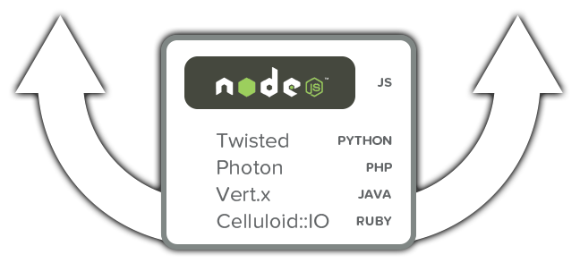
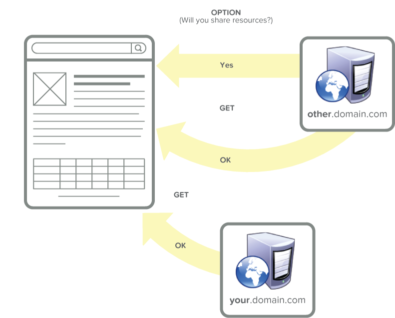

drupal as a data platform
session 2
Layering Drupal with emerging technologies to create a performant, scalable data purveyor.
Who we are
Diana Montalion Dupuis: @dianadupuis
Andrew Elster: @filmknurd
Sam Heuck: @samheuck
Astonish Design
Drupal
An open-source content management PHP/MySQL framework designed for rapid development of content-rich web applications.
Reasons (Among many)
- Growth: evolving tool
- Foundation skill set
- Users
"Big" Data
"Big" in relation to the amount of content Drupal is designed to manage
3 V's
- Volume
- Velocity
- Variety
Content
- Every kind of data
- Comes from everywhere
Current Issues
- Bootstrapping
- Bottlenecks - Normalized - Join Happy
- Lack of solution architecture
Improving performance
- Varnish
- Caching schemes
- Optimizing queries and indexing
- Using Views module judicioulsy
- Systems architecture
Who is the user
- Visitors and editors
- Data miners
- Examples ...
Welcome to the future
When modularizing the architecture creates performant applications for all content and all users.
The cost of bootstrap
- Hooks allow modules to customize behavior
- Drupal calls hooks during each stage of bootstrap
- More modules, more hooks, slower bootstrap
Massive Callstacks
Bootstrap on Every Request
Avoiding the Bootstrap

API and Node.JS
CORS
RESTful
Code Samples
On the front-end
Organize your Code
Why Discourse Uses EmberEmber
Algebraix